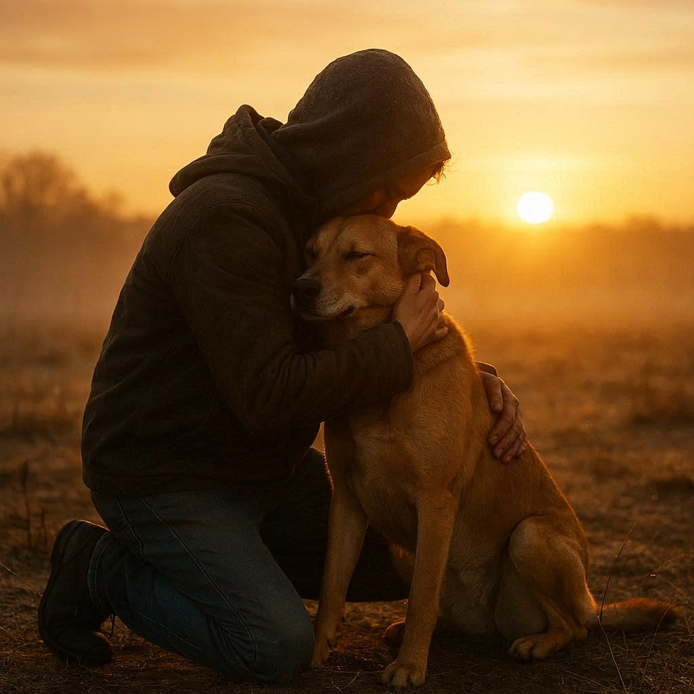

The Future of Second Leash

Emergency Intake Facility
A safe, welcoming place where dogs can receive immediate care while we locate a foster family. Designed to reduce shelter intake and prevent unnecessary owner surrenders.

Private Outdoor Runs
Every dog deserves a peaceful outdoor space with room to exercise, decompress, and receive enrichment while waiting to return home.

Reunification
Our greatest goal will always be bringing families and their dogs back together. Every foster placement is one step closer to that reunion.

Community Partnerships
Working alongside treatment centers, hospitals, law enforcement, domestic violence programs, and community organizations across Arkansas.

Statewide Foster Network
A network of compassionate foster homes ready to step in whenever families need temporary help.

Education & Prevention
Providing emergency planning resources, pet preparedness guides, and support that helps keep pets with the people who love them.